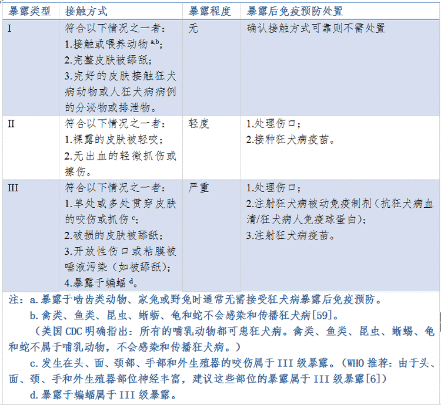
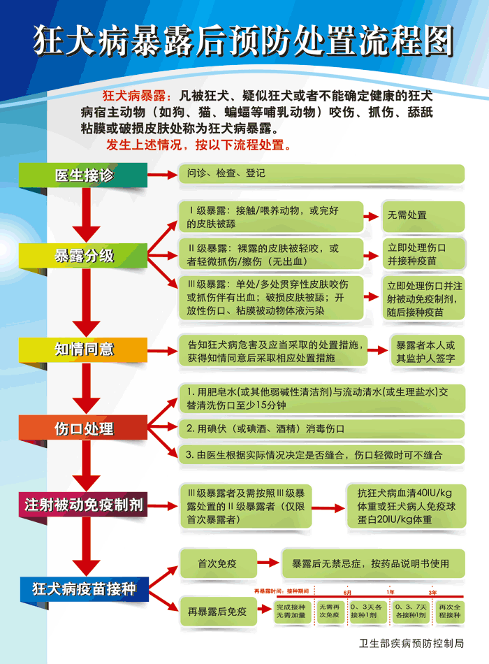

首页
首页 返回
返回狂犬病防治 - 狂犬疫苗使用
注射日期 - (请输入日期后提交)
| 211接种方案 | 5针接种方案 |
|---|---|
|
|
|
解答QA:
狂犬病是狂犬病毒所致的人畜共患急性传染病，人多因被病兽咬伤而感染。
该病潜伏期长短不一，可防不可治，病死率为100%的急性传染病。
目前唯一有效的预防控制措施为：伤口处理、接种狂犬疫苗。
III级暴露患者除接种狂犬病疫苗外，应加用“狂犬病人免疫球蛋白”或“抗狂犬病血清”。
常见问题如下：
1、伤口处理方法？
-
答：严格地伤口处理，
用清水或肥皂水反复冲洗受伤部位，时间不少于15分钟。
一般情况下伤口不包扎、不缝合。
2、狂犬疫苗有什么不良反应？
-
答：接种疫苗后应在院观察至少半小时。
极少数人可局部红肿、皮疹，一般无需特殊处理。
若有较明显反应或发热，请及时来院对症处理。
3、接种狂犬疫苗后生活与饮食要注意什么？
-
答：接种狂犬疫苗半月内一般忌饮酒、抽烟、浓茶、酸辣等刺激性食物，避免剧烈运动等，以免引起反应。
4、儿童接种狂犬疫苗是否会影响其他疫苗的接种？
-
答：不影响。
接种狂犬病疫苗期间也可以正常接种其他疫苗，但优先接种狂犬病疫苗。
5、接种狂犬疫苗有无时间限制？
-
答：原则上是接种狂犬疫苗越早效果越好。
如超过数日，甚至数月只要有条件都应尽快补接种。
6、没按流程接种疫苗，延迟了一天或几天怎么办？
-
答：按时接种疫苗，对机体产生免疫力非常重要，特别是前3针最关键，请注意按时接种。
如果是前3针延迟，建议重新全程免疫。
反之，只需调整接种时间，其后续针次相应顺延。
7、不同品牌的狂犬疫苗能否混用吗？
-
答：尽量使用同一品牌疫苗。
但临床观察混用不同品牌的疫苗不会影响其预防作用。
8、如果被已接种过狂犬疫苗的猫狗咬(抓、舔)伤后，是否需要接种狂犬疫苗？
-
答：需要。
因为动物接种狂犬疫苗后，保护率并非100%，仍可能带有狂犬病毒的情况。
9、被人咬伤要不要接种狂犬疫苗？
-
答：不一定。
如确定咬人者无狂犬病，就不需要。
但人口腔有多种病菌，仍需及时就医。
10、孕妇可否接种狂犬疫苗？
-
答：可以。
按照相关文献及指南：暴露后免疫没有任何禁忌症。
研究表明，孕妇接种狂犬疫苗是安全的，不会对胎儿造成影响。
但一般不建议孕妇行暴露前免疫。
11、以前接种过狂犬疫苗，再次暴露还要再接种吗？
-
答：不一定。
如果全程免疫后6月内，一般不需要再接种；
如果6～12月内者，应当于0和3天各接种1剂；
如果1～3年内者，应当于0、3、7天各接种1剂；
如果超过3年者，应当重新全程接种。
但务必首先、及时、彻底地进行伤口处理。
12、什么动物会传染狂犬病？
-
答：主要包括：①野生哺乳类动物（如：犬、狼、猫等肉食动物和蝙蝠等）；②家畜类（如：狗、猫、猪、牛、羊和马等）。
但，非哺乳类动物不会感染和传播狂犬病毒（如：禽类、鱼类、昆虫、蜥蜴、龟和蛇等）。
13、暴露分类（受伤分类）
-

14、狂犬病暴露后预防处置流程图
-
